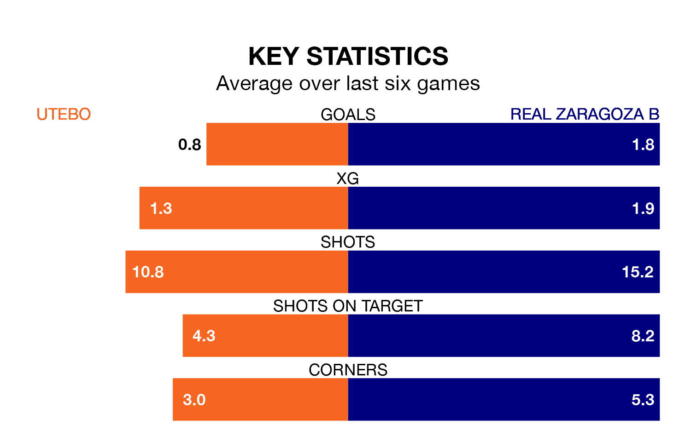

Real Zaragoza B face Utebo on Sunday seeking to protect their long unbeaten run in the Segunda División RFEF Group 2.
Zaragoza B are unbeaten in five, with two wins and three draws, ahead of the 11am kick-off.
They face an Utebo team who have won one and drawn three over the same number of games.
With 38 goals in 28 games so far this season, Zaragoza B are scoring more than average in the league with 1.4 goals per game. And they are conceding fewer than average, letting in 26 goals at a rate of 0.9 per game.
Utebo, meanwhile, are average scorers, with 1.1 goals per game. They have conceded 0.9 goals per game.
In the last 10 years, Utebo and Zaragoza B have played each other on six occasions. Utebo won one of them, Zaragoza B two, and they drew three times.
On average, Utebo scored 0.8 goals and Zaragoza B 1.3 in those matches.
Their last meeting was on November 19, when Zaragoza B won 2-0 at home.
The away side are fourth in the table after 28 games, of which they have won 13 and drawn 10, earning 49 points.
The hosts are one place behind Zaragoza B in fifth, with 13 wins and 10 draws putting them on the same number of points.
Utebo's last match was on March 23, a 0-0 draw against Real Sociedad III.
Zaragoza B beat Deportivo Alaves B 2-1 last time out, on Sunday, with Aitor Mañas Buenadicha and Marcos Cuenca Aranda on the scoresheet.
Updated: 12:39 (UTC), 26/03/24